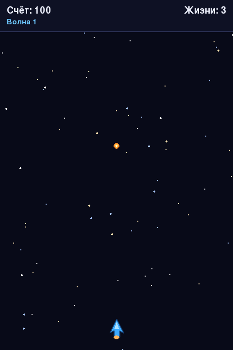

Глава 21 · Проект: космический шутер
Попадания и столкновения
colliderect() проверяет столкновения — попадание уничтожает врага, а враг может уничтожить корабль.
Уничтожаем врагов
Столкновение пули с врагом проверяет готовый метод Rect.colliderect()
— при попадании оба удаляются из своих списков, а счёт увеличивается:
unichtozhenie_vragov.py
novye_puli = []
novye_vragi = list(vragi)
for pulya in puli:
popala = False
for vrag in list(novye_vragi):
if pulya.colliderect(vrag):
novye_vragi.remove(vrag)
schet += 10
popala = True
break
if not popala:
novye_puli.append(pulya)
puli = novye_puli
vragi = novye_vragiПочему не удалять элементы прямо во время перебора списка?
Удаление элемента из списка
vragi прямо внутри цикла for vrag in vragi: может пропустить соседние элементы — список «сдвигается» под ногами цикла. Безопаснее собрать новые списки уцелевших пуль и врагов, как показано выше. Финальная версия (раздел 21.9) решает эту же задачу без ручных списков — через pygame.sprite.Group и groupcollide().
Когда враг уничтожает корабль
Если враг долетел до низа экрана или столкнулся с кораблём — игра заканчивается:
unichtozhenie_korablya.py
for vrag in vragi:
if vrag.bottom >= VYSOTA or vrag.colliderect(korabl):
igra_okonchena = True
breakМгновенный конец игры — тоже временное решение
Здесь ОДНО столкновение сразу заканчивает игру. Финальная версия (раздел 21.16) заменяет это на систему жизней с временной неуязвимостью после удара — так три врага, столкнувшихся с кораблём в один момент, не отнимают сразу три жизни.
Практика: столкновения пуль, врагов и корабля
Pygame открывает нативное окно Python — выполните локально в VS Code, PyCharm или Jupyter
Практика выполняется локально